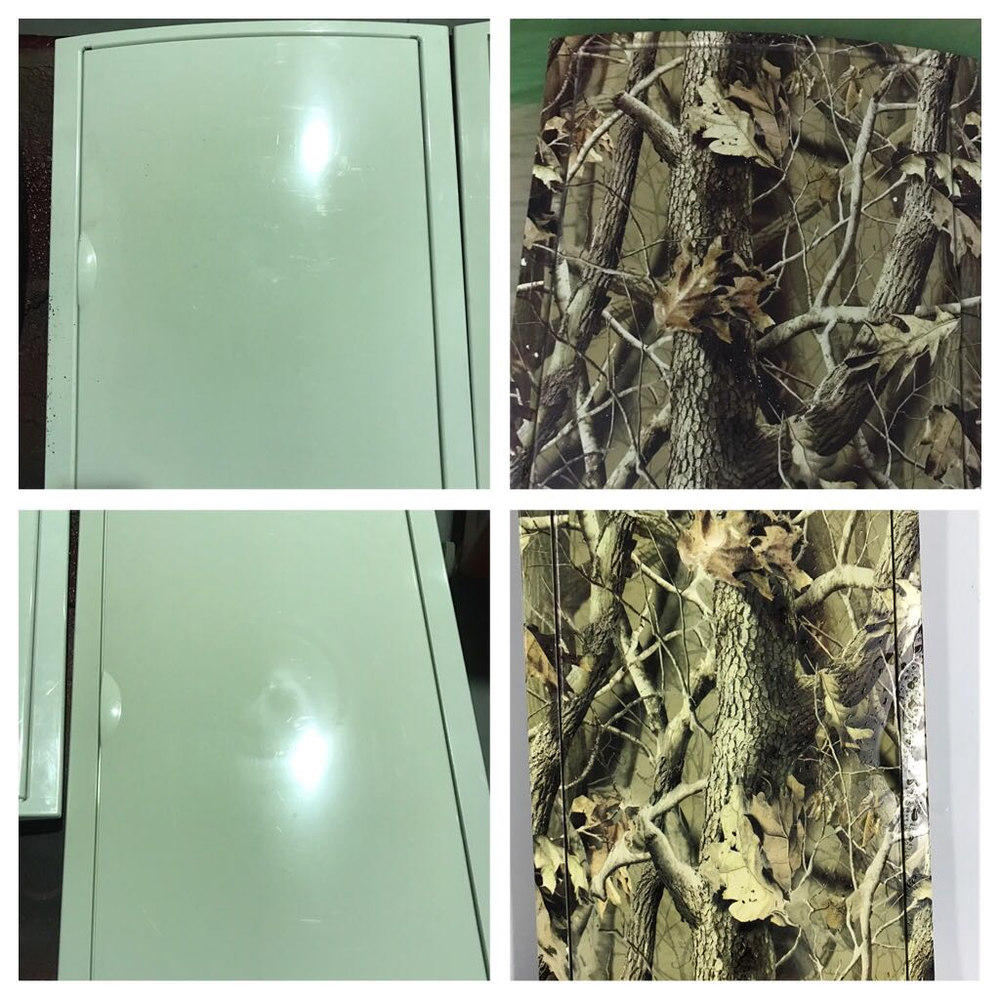

¿Que es la hidroimpresion?

El Water Transfer Printing o Hidroimpresión es un novedosa
técnica de decoración. Esta nueva técnica nos permite decorar,
restaurar, cambiar… diferentes materiales tales como madera,
vidrio, porcelana, plásticos, metal….…cualquier elemento que se
pueda sumergir en agua.
- A diferencia de cualquier vinilo conseguiremos llegar a
cualquier superficie y recoveco ya que se amolda a la
pieza.
- La durabilidad de dicho material es prácticamente
infinita ya que aplicaremos un barniz que nos aportará
durabilidad, resistencia y un acabado excepcional.